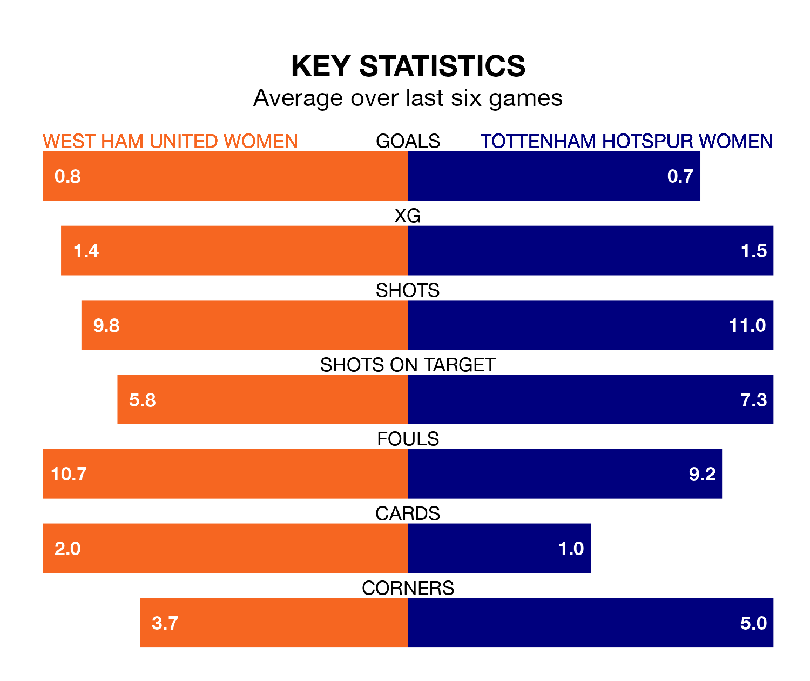

West Ham United Women are on a terrible run ahead of hosting Tottenham Hotspur Women at the Chigwell Construction Stadium on Sunday, with just one point collected from their last six games.
The Hammers have picked up just one draw in their last six FA Women's Super League games, and face a Spurs side whose last six games have brought one win and three draws.
West Ham United are 11th in the table after 10 games, of which they have won one and drawn two, earning five points.
Tottenham Hotspur are five places ahead of the Hammers in sixth, with four wins and three draws putting them on 15 points.
In Martha Thomas, Spurs have one of the league's sharpest shooters so far this season. She has notched seven goals in 10 appearances, to sit second in the scoring charts.
Her goal rate of one every 126 minutes is much quicker than that of Riko Ueki, the hosts' top scorer with a goal every 278 minutes, and a total of three goals in 10 games.
With eight goals in 10 games so far this season, West Ham United are the league's lowest scorers with 0.8 goals per game. And they are conceding more than average, letting in 21 goals at a rate of 2.1 per game.
The away side are also below average scorers, with 1.5 goals per game, compared to a league average of 1.7. They have conceded 2.0 goals per game.
In the last three years, West Ham United and Tottenham Hotspur have played each other on four occasions. West Ham United won two of them and they drew twice.
On average, the Hammers scored 1.5 goals and Spurs 0.8 in those matches.
Their last meeting was on May 27, when they played out a 2-2 draw.
West Ham United's last match was on December 17, a 1-1 draw against Leicester City WFC, with Honoka Hayashi getting the goal for the Hammers.
Tottenham Hotspur beat Arsenal Women 1-0 last time out, on December 16, with Thomas on the scoresheet.
Updated: 11:29, 08/01/24